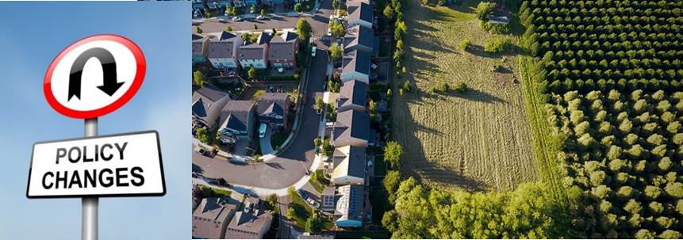

InterACTWEL
A key to resilient Food-Energy-Water sectors in local communities
Food, Energy, Water NEXUS
Our planet's natural resources which is the water, the land,the atmosphere, and the ecosystems face an increasing amount of stress from wide range of disturbances. These disturbances may be chronic meaning that they occur over long periods of time or they can be shocks that occur rapidly and with great effect. The disturbances can lead to an extensive degradation and depletion of critical natural resources for example it may include something like climate change or floods, droughts, storms, diseases, fires, earthquakes, tsunamis as well as disturbances that may be caused by human activities such as invasive species, forest cleaning, acts of terrorism and sometimes even new laws and policies. Many sectors including agriculture sector,the water sector, and the energy sector heavily dependent on natural resources for economic growth and are as a result vulnerable to profound consequences when natural resources are stressed.
More and more communities are beginning to realize the natural resource decisions have worked in the past, no longer work for current and future resource problems because of the increasing interdependencies between food, energy, and water Sectors.
When faced with highly stressed natural resources, many communities worry about how much water they will have to grow next year’s crop up or fish habitat or how much and how expensive the energy will be to irrigate fields or power local industries. To be resilient to stresses from a changing world the agriculture, energy, and water sectors can no longer just focus on their individual use and management of critical natural resources.
They need to become aware and many of them already are that interdependencies between food, water, and energy resources that impact their communities. Becoming aware of this Food, Energy, and Water NEXUS is only the first step. We need a comprehensive set of management solutions that are flexible to the demand of food, energy, and water resource users, manager, and consumers. These solutions must have multiple flexible options for food, energy, and water for adaptable and sustainable long-term management.
What this really means is that effectively responding and recovering from both chronic and shock disturbances requires significant coordination and communication between all affected stakeholders. Without effective coordination, communities are vulnerable to inconsistent responses to change where one group may react to a disturbance in a way that only benefits their specific group such as pumping more ground water when surface water is limited without thinking of the ripple effects that may have on all other groups such as municipal users. This may lead to unanticipated risks
To explore the success of the working in nexus space, we went to Hermiston Oregon which is small town in eastern Oregon.
Hermiston Region
Hermiston Oregon is located in North East of Oregon and it is part of Umatilla and Morrow Counties. The region has large agricultural industry (about 73% of land) Includes large food processors, energy providers (Hydropower – 980 MW, Natural gas – 900 MW, Wind – 545 MW), and water resources.
Hermiston is a thriving agricultural community, farmers, food processors, electricity utility producers, hydroelectric producers, port, U.S. Army Crops. They all work together and a deformitying community which use significant amount of land, water, and energy resources in a very efficient way and Hermiston Oregon is also a place where the Columbia river and the Mcnary Dam are placed and they use the proximity to these water resources from the Columbia. Farmers in the last 30 years in this region have been one of the most innovative and most efficient people who use the resources most effectively.
The Hermiston Oregon region has been growing quite a bit as a community and economy but is not bumping it up against some of the resource constraints that it has in terms of energy, water, labor, and it is perhaps a little bit more vulnerable to changes in the environment and global economic markets that it might have been in decades past and so it is perhaps time to take a more deliberative approach to long term planning, thinking about how some of those changes could affect the interdependencies of the food, energy, and water and ways that the communities can make long term plans to act together to avoid or minimize any kind of disruptions from those changes.
Umatilla River Basin problems
In 1990 DEQ declared the Lower Umatilla Basin a Groundwater Management Area because nitrate-nitrogen concentrations in many area groundwater samples exceed the drinking water standards for nitrate (10 mg/l). The groundwater area covers the lower portions of the Umatilla and Willow Creek drainages. There is a Pesticide Stewardship Partnership in the Oregon portion of the Walla Walla River drainage
FEW nexus, by definition, refers to the connections between the food (F) sector, the energy (E) sector, and the water (W) sector that create interdependencies between these sectors. For example production of crops, animal husbandry, food processing, and transporting food all require intensive use and management of water, energy, and land. Globally, agriculture is responsible for 70% of water withdrawals, and 30% of total energy produced in this world is used for food production and supply-chain. However, with threats to water supplies because of changes such as climate change, rising urban demands, and decreasing storage in surface and ground water systems, the food sector is consequently vulnerable to these threats. At the same time, a growing food sector has increasing energy demands, thereby putting additional stresses on how and how much the energy sector is expected to generate cost-effective energy. However, the energy sector is itself a huge consumer of water (90% of power produced in this world is water-intensive), and as a result a growing energy sector adds even more stress on water supplies, which the food sector heavily depends on. Hence, increase in energy demand by the food sector comes with a tradeoff in increase in water use by energy sector and less water available for the food sector. Managing these interdependencies and trade offs is immensely critical, in order to ensure that these sectors can evolve in a sustainable manner and effectively respond to threats.
Food
In Umatilla, Seventy percent of the land or 1,447,321 acres is divided among 1,658 farms (2007 Census of Agriculture). The rest of the land was left fallow, grazed, or enrolled in the Conservation Reserve Program.
In 2008, Umatilla County had the second highest agricultural sales among the 36 Oregon counties, behind Marion County (Ibid.). Umatilla/Hermiston and Milton-Freewater primarily produce irrigated agricultural crops. Umatilla/Hermiston produces more than ninety percent of the Field Crops (potatoes, mint, etc.) and Grasses and Legumes in the County. Milton-Freewater produces more than ninety percent of the Tree Fruit and Nuts in the County. Pilot Rock/Pendleton has the highest sales of Grains (44.71%) and Livestock (43.55%) in the County. crops (e.g. potatoes, green peas, asparagus, melons), hay and silage feeds (e.g. alfalfa, corn, pea vines), fruit products (e.g. apples, cherries, prunes, peaches, apricots, grapes), and an extensive livestock industry raising cattle and calves, hogs and pigs, sheep and lambs, and chickens and turkeys. Besides being the largest industry in this county and second largest industry in Oregon, agriculture creates a rural atmosphere greatly desired by many city, rural, and regional people. A comprehensive plan considers agriculture as an irreplaceable natural resource. Its wise use is of as much importance as other resources.
Energy
Energy sources in this region include, solar, wind, biofuels, coal and natural gas power plant and hydropower. The Columbia River provides a great potential for hydropower and there are several dams on this river. McNary Dam is among the biggest dams on this river. The dam is 7,365 feet long, rising approximately 183 feet above the streambed. It consists of a concrete structure with an earth fill embankment at the Oregon (south) abutment. The spillway is a concrete, gravity- type spillway dam. It is 1,310 feet long, and contains 22 vertical lift gates, each 50 feet by 51 feet. The crest is at elevation 291 feet mean sea level and is designed to pass a flood of 2,200,000 cubic feet per second.
Hermiston Generating Plant (HGP) is located in northeastern Oregon, nine miles south of the Columbia River. HGP is a 474 megawatt highly reliable modern natural gas fueled power plant that provides power for nearly 500,000 households in the Pacific Northwest. The plant also provides steam to Lamb-Weston's adjacent potato processing plant. HGP was built by Bechtel for U.S. Generating Company in 1996. The plant is based on two General Electric Frame 7FA combustion turbine generators operating in combined-cycle with two heat recovery steam generators and two steam turbine generators. Perennial owns 50 percent interest in HGP and is the plant's manager and operator. HGP has been recognized by the Oregon Occupational Safety and Health Division (OR-OSHA) for the plant's exceptional health and safety record.
The Hermiston Power Project is another power plant with capacity of 546 MW located in Hermiston, Oregon. The plant utilizes two combustion turbines, each with its own heat recovery steam generator, that supplies steam to a single steam turbine generator. The Hermiston Power Project sells a portion of the power it produces into the Pacific Northwest and California power markets as part of Calpine’s Western region of power plants. Calpine also leverages the plant’s quick-responding, natural-gas fired generation and its contracted transmission resources in the Northwest to help integrate wind energy into the region’s power grid. Through agreements with the Constellation Energy Balancing Authority, Hermiston’s output is quickly increased or reduced to compensate for the variability of wind generation. Fueled by natural gas and equipped with advanced emissions control technology, the Hermiston Power Project is one of the cleanest projects of its kind in the state. In 2003, the Hermiston Chamber of Commerce nominated Calpine for the Governor’s Gold Award based on its community support activities.
Pacific Ethanol Inc. is an ethanol production plant located at the Port of Morrow in Boardman, Oregon. The biorefinery began operations in August 2007 and sells ethanol, wet distillers grains, corn oil, and CO2 .
Water
Water is hugely contentious in the state of Oregon and this region unsuccessfully for many years tried to get water projects approved on state level and it was unsuccessful for many times.
Water resources in the Umatilla sub basin include surface water, ground water and waste water. Surface water is derived from Columbia River and its tributaries such as Umatilla River, ponds and water reservoirs. Groundwater is an important resource to the economy of Umatilla County by providing the bulk of the water used for agriculture, as well as for drinking water supplies for the many communities and nearly all of the rural residences. The Umatilla Basin has more groundwater resource areas determined to be “Critical” by the Oregon Water Resources Department than any other part of Oregon. Waste water is coming from residential areas and food processing industries. According to Mucken and Bateman (2017) report, quality of surface water and ground water is critical for residential, agricultural and industrial use and being monitored by Oregon Department of Environmental Quality (DEQ).
Surface water quality
Temperature, sedimentation, and nutrients are the most common types of pollution that impair Oregon’s rivers and streams. Impaired water quality drives up the cost of water treatment and limits access to clean water for fish, drinking water, agriculture, and recreation.
Ground water quality
Groundwater contamination is also a serious issue in some areas of Oregon. Private domestic wells may face contamination issues from nearby failing septic systems. Industry and agriculture can also be a source of pollutants for groundwater, as can surface water and groundwater interactions.
Most of DEQ’s groundwater monitoring efforts target vulnerable areas or areas of known contamination (i.e., Groundwater Management Areas (GWMAs)). Nitrate is one of the most commonly analyzed contaminants in these areas, with data showing that around 30 percent of groundwater samples detect nitrate at levels that suggest a 22 Chapter 1 – Understand Water Resources Today pollution problem exists (7 mg/L), and around 20 percent currently exceed health standards (10 mg/L). Bacteria are a commonly detected contaminant as well, with about 20 percent of samples showing positive bacteria detections. Arsenic is not as commonly studied, but when sampled in vulnerable groundwater areas, about 30 percent of samples show levels above health standards (10 ug/L). Other contaminants detected in groundwater studies include Dacthal, manganese, lead, iron, aluminum, perchlorate, uranium and vanadium. There have been few studies that investigate contaminants such as current use and legacy pesticides, herbicides, pharmaceuticals, personal care products, and volatile organic compounds. Based on data collected in the past five years, when detections of those contaminants are found, they are often far below health standards, if any standards exist.
Three major river systems make up the Umatilla Basin:
The Umatilla River (100 miles in length)
The Walla Walla River (61 miles in length)
The Willow Creek (79 miles in length)
All three rivers flow from their headwaters in the Blue Mountains to the Columbia River. The Umatilla River drainage and the northern portion of the Walla Walla River drainage are mostly in Umatilla County. The southern portion of the Walla Walla River drainage is in Washington State. The Willow Creek drainage is mostly in Morrow County, the confluence with the Columbia River is in Gilliam County. These rivers support bull trout, Redband trout, Pacific lamprey, fall and spring Chinook salmon, Coho salmon and steelhead. The Umatilla Basin is characterized by irrigated agriculture at lower elevations, with grazing and timber lands at higher elevations. Elevations within the basin range from less than 300 feet at the Columbia River, to above 6,000 feet at the highest peaks of the Blue Mountains. Agricultural land, both dryland and irrigated, comprise the major portion of the basin. Crops include onions, corn, dry and green peas, and potatoes. The basin also contains many fruit orchards (cherry, apple, peach, pear) and vineyards. In 1990 DEQ declared the Lower Umatilla Basin a Groundwater Management Area because nitrate-nitrogen concentrations in many area groundwater samples exceed the drinking water standards for nitrate (10 mg/l). The groundwater area covers the lower portions of the Umatilla and Willow Creek drainages. There is a Pesticide Stewardship Partnership in the Oregon portion of the Walla Walla River drainage
Threats
Unexpected changes and disturbances can threaten consistent availability and quality of shared natural resources (e.g., water, energy, and land)
Threats vary in origin, scale, and magnitude and affect Resiliency of Food, Energy, and Water sectors in local communities. Over time, water, energy, and land resources impaired by threats could make it challenging for our local food, energy, and water sectors to absorb unexpected changes and retain function.
Below is the list of some chronic and acute threats:
Urban growth
Policy changes
Ground Water depletion
Water quality depletion
...

Ecological -Hydrological-climatic disturbances

Socio-economic changes
Adoptation Strategy
How can we increase the capability of communities to visualize food, energy, and water interdependencies over space and over time to create proactive planning strategies that engage all stakeholders and all sectors in together developing solutions?
How do we stop the day by day and sometimes even minute to minute chase for water, energy, and food efficiency and help these communities think about long term systemic changes to the critical natural resources and even use prior knowledge to fuel all of the solutions.
InterACTWEL is a computer-aided decision support system that is being developed to empower land, energy, and water managers and even food producers to envision and plan towards a resilient future for their local communities.
The decision support system is being designed to help local communities plan for range of environmental disturbances for example extreme floods, droughts, ground water declines, and even changes to agricultural or environmental policies.
Connected communities have much better chance of being prepared to manage risks posed by uncertain future. How we manage our water, energy, and land resources as threats increase, is going to be critical and insuring how resilient we are in the long run as the future unfolds.
Coordination among stakeholders is especially critical when resource availability and quality is threatened. Stakeholders may include those whose livelihoods depend on food and energy production, as well as availability of water for consumptive uses (e.g., industry, agriculture, drinking water) as well as non-consumptive uses (e.g., fisheries, ecosystem maintenance, recreation, navigation, hydropower, cultural preservation). Food-Energy-Water (FEW) actors often include farmers, tribes, water managers, dam operators, industries, recreationalists, government agencies and environmentalists. InterACTWEL is a computer-aided decision support tool that empowers FEW actors to envision and plan towards a resilient future for their local communities. Unlike other tools that focus on the short-term decision-making, InterACTWEL in a long-term planning tool that help communities be more resilient to changes that they do not have control of, such as a severe water restriction or changing state laws. Whenever there is an environmental disturbance (e.g., extreme floods, droughts, groundwater declines, fish diseases) or when there are new agricultural or environmental policies, FEW actors can use InterACTWELs intuitive interfaces to examine how these factors will affect their goals, operations and livelihoods. The scientific models in InterACTWEL allow individual actors to identify potential adaptation strategies from a wide range of management choices available to them, while also enabling them to learn about how their decisions affect other FEW actors. With InterACTWEL local communities of FEW actors can increase their overall capacity to adjust their operations through time, for uncertain and adverse stresses affecting the environment or the economy. Anyone can use and access InterACTWEL; the data-secure tool is easy to navigate and can run on either a desktop or mobile application. How it works: InterACTWEL goes well beyond just being a web-based platform to share data and information among FEW actors in a local region. The system contains advanced scientific models and interactive optimization algorithms that can quickly synthesize and leverage the collective wisdom of FEW actors. The algorithms help identify potential adaptation strategies, while also meeting environmental, economic and social sustainability goals.